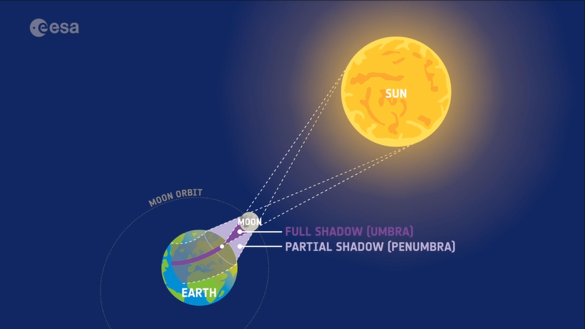

In a partial solar eclipse, only a portion of the Sun is covered by the Moon, and viewers on Earth see a partial reduction in sunlight. When the Moon and Sun are not perfectly aligned and just a part of the Moon passes in front of the Sun, only the Moon’s penumbra (areas in yellow line) will hit Earth. The umbra(areas in red line) misses the location that we observed. This produces a partial eclipse only.
While not as dramatic as a total eclipse, a partial eclipse still leads to a noticeable dimming of the sky. The impact on the atmosphere is less pronounced compared to a total eclipse.
Satellites equipped with solar panels may experience a temporary reduction in power generation during a solar eclipse. This reduction can impact the satellite's operations and may necessitate the use of onboard batteries or alternative power sources.
The sudden reduction in sunlight during a solar eclipse can cause temperature fluctuations on the satellite. This can affect thermal control systems and may require adjustments to maintain optimal operating temperatures.
Changes in the ionosphere and the Earth's atmosphere during a solar eclipse might affect satellite communication signals. However, the impact is generally minimal and temporary
Solar eclipses can only happen at New Moon because the Moon passes between the Sun and Earth during that Moon phase. However, not every New Moon results in a solar eclipse. This is because the plane of the Moon's orbital path around our planet is inclined at an angle of approximately 5° to Earth's orbital plane around the Sun, the ecliptic. The points where the 2 orbital planes meet are called lunar nodes. Solar eclipses occur only when a New Moon takes place near a lunar node.